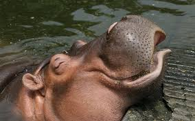
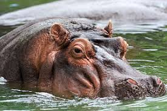

Hà mã là một loài động vật ưa nước, có lẽ đó cũng là lý do tại sao người Hy Lạp từng đặt tên cho chúng là “trâu nước”. Một ngày hà mã dành tới 16 giờ để đằm mình dưới những dòng sông hoặc hồ để làm mát cơ thể của chúng dưới cái nóng như lửa thiêu của châu Phi. Hà mã là những “vận động viên lặn” cừ khôi của thế giới động vật và chúng còn có thể nín thở dưới nước tới 5 phút. Cơ thể của hà mã thường có kích thuớc lớn khiến chúng chỉ có thể đi bộ, nằm dưới đáy hồ hoặc ở những vùng nước cạn. Đôi mắt và lỗ mũi của hà mã nằm trên đỉnh đầu giúp chúng có thể quan sát và thở ngay cả khi chúng lặn xuống gần như hoàn toàn.
Khi nằm phơi nắng trên bờ, cơ thể hà mã tiết ra một chất lỏng màu đỏ mà mọi người thường nói rằng chúng tiết ra máu. Nhưng thực ra, chất lỏng này là một chất dưỡng ẩm cho da của chúng và đồng thời hoạt động như một loại “kem chống nắng” mà có thể bảo vệ hà mã khỏi vi khuẩn gây bệnh.
Vào hoàng hôn, hà mã lên bờ để ăn cỏ. Chúng có thể đi 9,2 km trong một đêm và tiêu thụ tới 80 kg cỏ. So với cân nặng của hà mà thì lượng thức ăn chúng nạp vào khá ít. Khi gặp nguy hiểm trên đất liền, hà mã sẽ chạy tới những nơi có nước, khi đó nếu di chuyển trong khoảng cách ngắn, tốc độ của chúng có thể nhanh như con người.